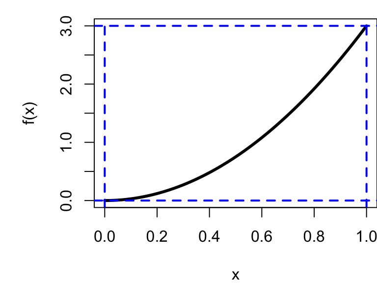
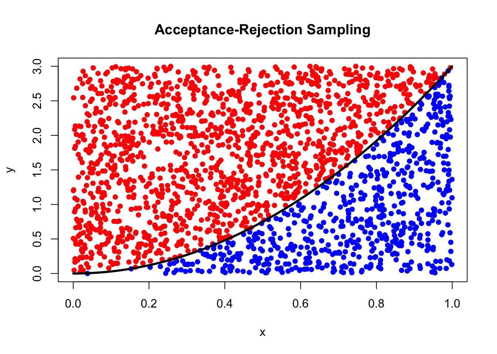
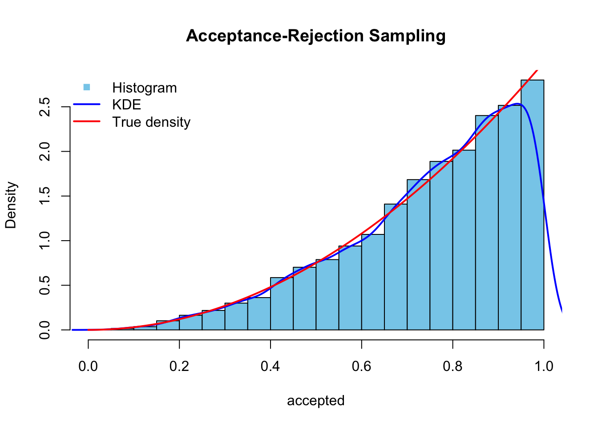
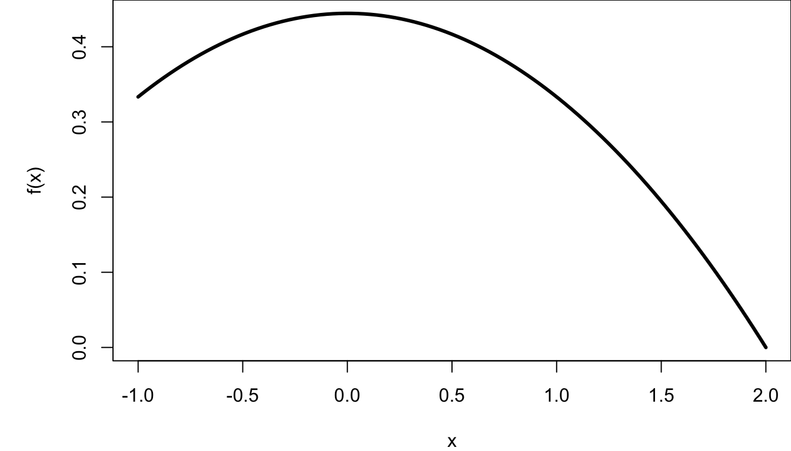
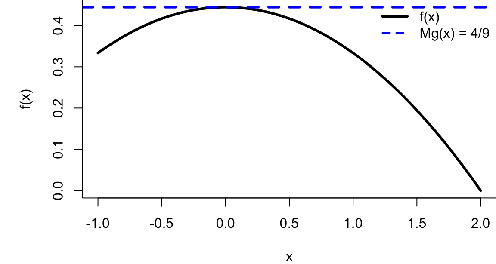
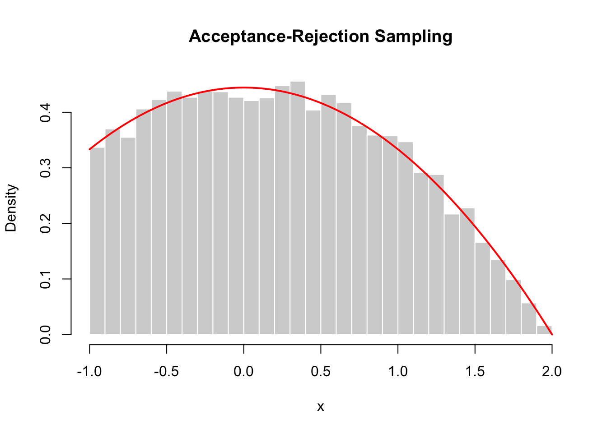
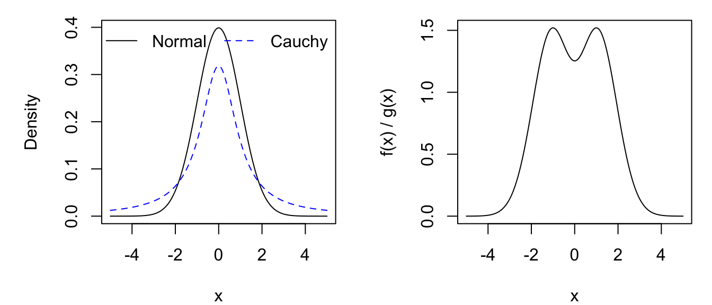
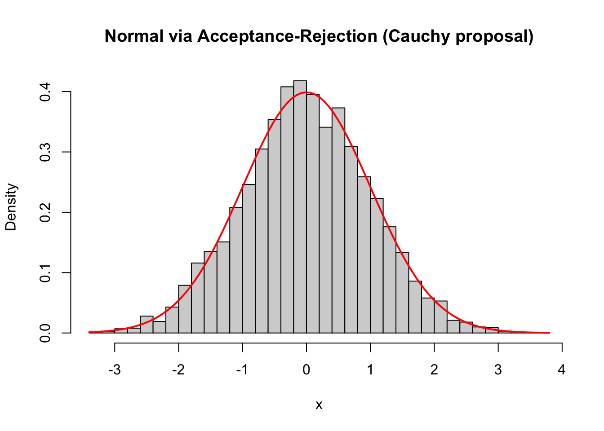

x <- seq(0, 1, length.out=100)
par(mar=c(4,5,1,0))
curve(3 * x^2, type = "l", lwd = 3, ylab = "f(x)")
abline(v=c(0,1), lwd = 2, lty = 2, col = "blue")
abline(h=c(0,3), lwd = 2, lty = 2, col = "blue")
In the previous section, we saw that inverse transform sampling provides a direct and elegant way to generate random variables from a given distribution. However, this approach relies on the ability to compute and invert the cumulative distribution function (CDF), which is not always feasible in practice.
For many important distributions, the CDF:
This limitation motivates the need for more flexible simulation techniques.
The acceptance–rejection method is a general approach that allows us to generate samples from a target distribution by using a simpler, easier-to-simulate distribution.
The key idea is:
Instead of sampling directly from the target distribution, we generate candidate samples from a convenient distribution and accept or reject them with a carefully chosen probability.
More concretely, suppose we want to simulate a random variable with density \(f(x)\), but direct sampling is difficult. We instead:
If the candidate is rejected, we simply try again.
This procedure produces samples that follow the target distribution \(f(x)\), even though we never sample from it directly. Intuitively, the method works by:
The acceptance–rejection method is powerful because: - it applies to a wide range of distributions, - it does not require inverting the CDF, and - it forms the foundation for many advanced simulation algorithms.
However, its efficiency depends on how well the proposal distribution g(x) approximates the target distribution \(f(x)\). Poor choices can lead to many rejections and slow performance.
We want to simulate from the density \[ f(x) = 3x^2, \quad 0 \le x \le 1. \]
First, verify this is a valid PDF: \[ \int_0^1 3x^2 \, dx = 1. \]
Although the CDF can be derived, inversion is not always convenient. Instead, we take a different approach.
Rather than transforming variables, we:
sample random points in a region and keep those that fall under the curve.
Consider the rectangle: \[ 0 \le x \le 1, \quad 0 \le y \le 3. \]
The curve \(y = 3x^2\) lies entirely inside this rectangle.
x <- seq(0, 1, length.out=100)
par(mar=c(4,5,1,0))
curve(3 * x^2, type = "l", lwd = 3, ylab = "f(x)")
abline(v=c(0,1), lwd = 2, lty = 2, col = "blue")
abline(h=c(0,3), lwd = 2, lty = 2, col = "blue")
To simulate from \(f(x) = 3x^2\):
Generate:
If \[ Y \le 3X^2, \] accept$ X$
Otherwise, reject and repeat
set.seed(123)
x <- runif(2000)
y <- runif(2000, 0, 3)
plot(x, y, pch = 16,
col = ifelse(y <= 3*x^2, "blue", "red"),
xlab = "x", ylab = "y",
main = "Acceptance-Rejection Sampling")
curve(3*x^2, add = TRUE, col = "black", lwd = 3)
set.seed(1234)
n <- 10000
accepted <- numeric(0) # initialise numeric variables/vectors
while(length(accepted) < n){ # keep sampling until we have n accepted values
x <- runif(1) # proposal: X ~ Uniform(0,1)
y <- runif(1, 0, 3) # auxiliary variable: Y ~ Uniform(0, 3)
if(y <= 3 * x^2){ # accept if point lies under the curve f(x)
accepted <- c(accepted, x) # keep accepted x
} # otherwise reject and try again
}
hist(accepted, prob = TRUE, col = "skyblue", main = "Acceptance-Rejection Sampling")
lines(density(accepted), col = "blue", lwd = 2) # Kernel Density Estimate (KDE)
curve(3 * x^2, col = "red", lwd = 2, add = TRUE) # True Density
legend("topleft", legend = c("Histogram", "KDE", "True density"),
col = c("skyblue", "blue", "red"),
lwd = c(NA, 2, 2), pch = c(15, NA, NA), bty = "n")
The rectangular approach works well when:
However, many distributions are more complex. We therefore generalise the idea.
Suppose we want to simulate from a target density \(f(x)\).
Choose:
such that \[ f(x) \le M g(x) \quad \forall x. \]
Then \(Mg(x)\) acts as an envelope over \(f(x)\).
To simulate \(X \sim f(x):\)
Generate \(Y \sim g(x)\)
Generate \(U \sim \text{Uniform}(0,1)\)
Accept \(Y\) if \[ U \le \frac{f(Y)}{M g(Y)} \]
Otherwise, reject and repeat
If accepted, set \(X = Y\).
The probability of acceptance is: \[ \frac{1}{M}. \]
The measurement error \(X\) (in mV) of a particular volt-meter has the following distribution:
\[ f(x) = \begin{cases} \dfrac{4-x^2}{9}, & \quad -1 \leq x \leq 2 \\ 0, & \text{otherwise.} \end{cases} \]
Simulate \(f(x)\) using acceptance-rejection method.

Step 0: Check whether \(f(x)\) is valid
\[ \int_{-1}^2 \frac{4-x^2}{9} \,dx = 1 \rightarrow \text{ valid PDF.} \]
Step 1: Determine \(Mg(x); f(x) \leq Mg(x)\)
Because the support is bounded, the best first proposal is:
\[ g(x) = \text{Uniform}(-1, 2) = \frac{1}{3}, \quad -1 \leq x \leq 2. \]
Since \(g(x)=1/3\), this becomes
\[ \frac{4-x^2}{3} \leq M \]
Now on [-1, 2], the maximum of LHS occurs at \(x=0,\)
\[ \max_{-1\leq x \leq 2} \frac{4-x^2}{3} = \frac{4}{3} \]
Hence, we can choose
\[ M = \frac{4}{3} \quad \text{ with an acceptance rate of } \quad \frac{1}{M} = \frac{3}{4} = 75\% \]
This gives
\[ Mg(x) = \frac{4}{3} \cdot \frac{1}{3} = \frac{4}{9} \]
So the envelope is just a horizontal line at height 4/9.

Step 2: Determine the acceptance rule
The general rule is
\[ U \leq \frac{f(Y)}{Mg(Y)} \]
where \(Y\sim g\) and \(U \sim \text{Uniform}(0,1).\)
Substitute in, gives
\[ \frac{f(Y)}{Mg(Y)} = \frac{4-y^2}{4} \]
So accept \(Y\) if
\[ U \leq \frac{4-y^2}{4}. \]
set.seed(1234)
n <- 10000
x <- numeric(0) # store accepted samples
while(length(x) < n){ # keep sampling until we have n accepted values
y <- runif(n, min = -1, max = 2) # proposal sample Y ~ g(x) ~ Uniform(-1, 2)
u <- runif(n) # U ~ Uniform(0,1) for acceptance test
accept <- u <= (4 - y^2)/4 # acceptance rule (returns TRUE/FALSE)
x <- c(x, y[accept]) # keep accepted y
}
x <- x[1:n] # trim to exactly n sampleshist(x, prob = TRUE, breaks = 40,
col = "lightgray", border = "white",
main = "Acceptance-Rejection Sampling",
xlab = "x")
curve((4 - x^2)/9, from = -1, to = 2,
add = TRUE, col = "red", lwd = 2)
Generate the standard normal distribution using the standard Cauchy distribution
Recall the PDF of \(X \sim N(0, 1):\)
\[ f(x)=\frac{1}{\sqrt{2\pi}}\exp{\left(-\frac{x^2}{2}\right)}, \quad x \in \mathbb{R}. \]
The PDF of \(X \sim \text{Cauchy}:\)
\[ g(x) = \frac{1}{\pi(1+x^2)}, \quad x \in \mathbb{R}. \]
Let’s compare the distributions:
x <- seq(-5, 5, length = 200)
dc <- dcauchy(x, location = 0, scale = 1)
dn <- dnorm(x, mean = 0, sd = 1)
par(mfrow=c(1,2), mar=c(4,5,1,1))
plot(x, dn, type="l", ylab="Density")
lines(x, dc, col="blue", lty=2)
legend("topright", col=c("black", "blue"), lty=c(1,2),
legend =c("Normal", "Cauchy"), ncol=2, bty = "n" )
plot(x, dn/dc, type="l", ylab="f(x) / g(x)")
Step 1: Find \(M\)
\[ \frac{f(x)}{g(x)} = \frac{1}{\sqrt{2\pi}}\exp{\left(-\frac{x^2}{2}\right)} \cdot \pi(1+x^2) = \frac{\pi}{\sqrt{2\pi}}(1+x^2)\exp{\left(-\frac{x^2}{2}\right)} \]
\[ \max_{-\infty < x < \infty}{(1+x^2)\exp{\left(-\frac{x^2}{2}\right)}} \]
Differentiate and set it equal to 0:
\[ \begin{aligned} \frac{d}{dx} \left(\frac{f(x)}{g(x)}\right) &= 2x\exp{\left(-\frac{x^2}{2}\right)} + (1+x^2)(-x)\exp{\left(-\frac{x^2}{2}\right)} \\ 0 &= \exp{\left(-\frac{x^2}{2}\right)} x (1-x^2) \end{aligned} \]
yields three critical points: \(x = 0, x = \pm 1.\)
From the ratio plot, we would expect the maximum to occur at \(x = \pm 1.\)
If this is not obvious, use the second derivative test to verify.
Substitute \(x= \pm 1\) into \(f(x)/g(x)\) yields
\[ M=2e^{-1/2}\sqrt{\frac{\pi}{2}}\approx 1.5203 \rightarrow \text{ with the acceptance probability of } 0.6577. \]
Step 2: Determine the acceptance rule
The general rule is
\[ U \leq \frac{f(Y)}{Mg(Y)} \]
where \(Y\sim g \sim \text{Cauchy}\) and \(U \sim \text{Uniform}(0,1).\)
Substitute in, gives the acceptance rule
\[ U \leq \frac{f(Y)}{Mg(Y)} = \frac{\sqrt{e}}{2} (1+y^2) \exp{\left(-\frac{y^2}{2}\right)} \]
set.seed(1234)
n <- 5000 # number of samples needed
M <- 2 * exp(-1/2) * sqrt(pi/2) # exact M ≈ 1.5203
samples <- numeric(0)
while(length(samples) < n){
y <- rcauchy(n) # propose from Cauchy
u <- runif(n) # uniform for acceptance
f <- dnorm(y) # target density
g <- dcauchy(y) # proposal density
accept <- u <= f / (M * g) # acceptance rule
samples <- c(samples, y[accept]) # keep accepted values
}
samples <- samples[1:n] # trim to exactly n sampleshist(samples, prob = TRUE, breaks = 40,
col = "lightgray",
main = "Normal via Acceptance-Rejection (Cauchy proposal)",
xlab = "x")
curve(dnorm(x), add = TRUE, col = "red", lwd = 2)
set.seed(1234)
y <- rcauchy(5000); u <- runif(5000)
M <- 2 * exp(-1/2) * sqrt(pi/2)
accept <- u <= dnorm(y) / (M * dcauchy(y))
cat("The empirical acceptance rate is", mean(accept))The empirical acceptance rate is 0.6578